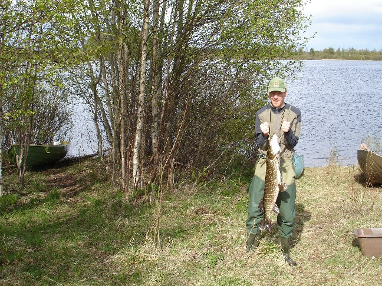

Gone Fishing
It all began last winter, that time I was ice-fishing. Then I've been
fishing many times at various places.
Here fishing while on a short
canoe tour around Sikås, some small village in Jämtland.
That night, or the night before, we laid net on the lake, using this rowboat.
The amazing thing was that we caught a fish on it, the first fish
of the season, a huge Pike or whatever that is. (Gädda).

You can see a little of how the area looks in the pictures.
Fishing for Öring